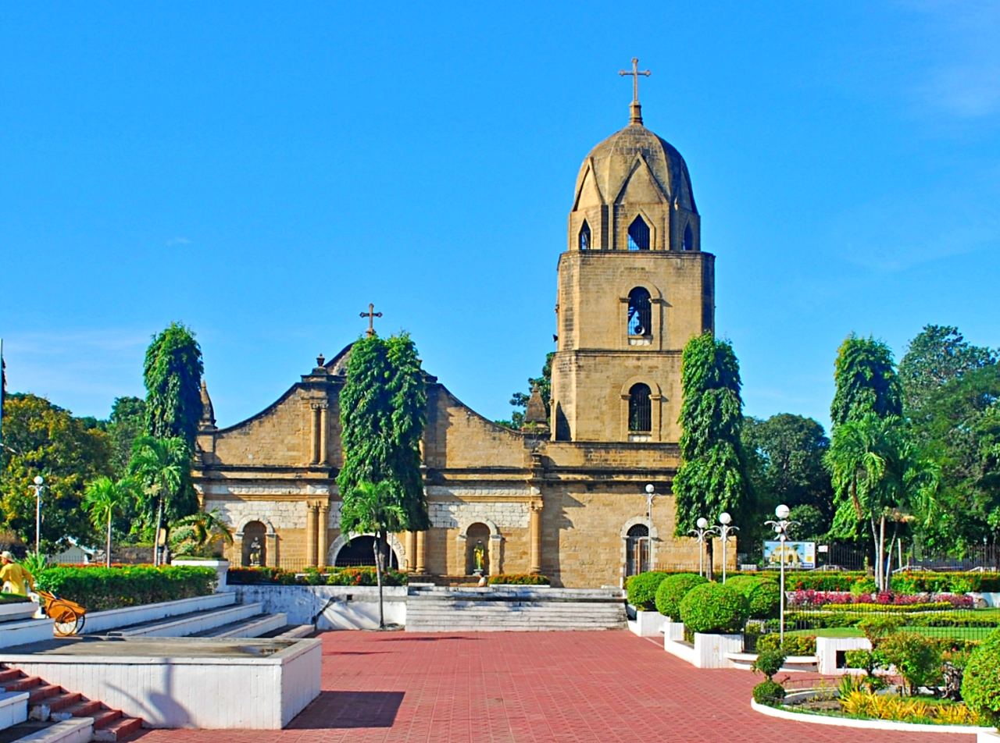

The name "Guimbal" is believed to come from the word "guimba", a type of drum used by early inhabitants to signal gatherings or warn of approaching vessels — a sound that echoed across the coast and became the town's namesake.
📜 Timeline
1590 — First written record of Guimbal appears in the writings of Father Colin of the Augustinian Order. The town officially began as a settlement under Spanish guidance.
1773 — Construction of the magnificent St. Nicholas of Tolentino Parish Church was completed using coral stones and limestone. It still stands today as the heart of the town.
1800s — Guimbal flourished as a trading center along the coast. The Camino Real (Royal Road) was built, connecting Iloilo City to southern towns and passing right through Guimbal.
1900s — The town grew steadily, with farming and fishing as the main livelihoods. Schools, the municipal hall, and public plaza were established.
Today — Guimbal remains a peaceful, progressive town while preserving its heritage. It is recognized as one of the most business-friendly and cleanest municipalities in Western Visayas.

⛪ The Historic Church
St. Nicholas of Tolentino Parish is not just a place of worship — it is a masterpiece of history. Its thick coral-stone walls, arched ceilings, and carved wooden doors have stood strong through earthquakes, storms, and wars. Generations of families have been baptized, married, and laid to rest within its walls. It is the pride and soul of Guimbal.
🎉 Bantayan Festival
Every year, the town celebrates Bantayan Festival — honoring the watchmen who once guarded the coast and the faith that protected the people. The festival combines religious devotion with colorful street dancing, reenactments of the town's history, and community joy. It is when the past comes alive through music, dance, and thanksgiving.